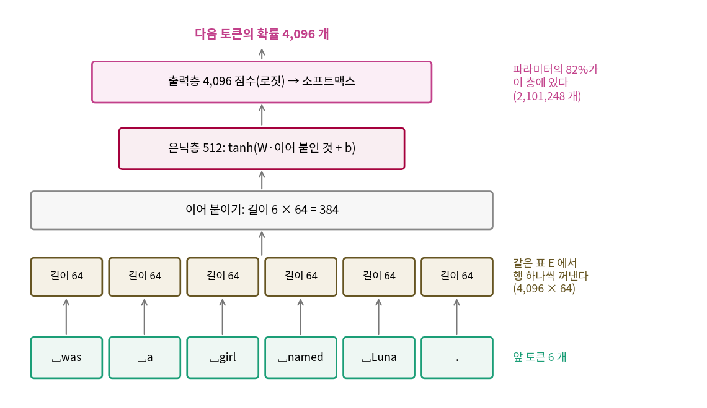

앞 글자 여럿 보기: 비슷한 낱말을 비슷하게 다루는 신경망
이 장의 물음
토큰 4,096 종류로 바이그램을 세면 바이트당 비트가 1.2818 까지 내려간다. 바로 앞 토큰 하나만 보고도 이만큼 맞히니, 앞 토큰을 여럿 보면 훨씬 잘 맞힐 것 같다. 그런데 앞 토큰 다섯 개로 다음 토큰을 맞히는 표를 세려면 문맥의 종류가 4,096 의 5제곱, 10¹⁸ 개를 넘고, 학습 토큰 5억 개로는 그 표의 거의 모든 칸이 빈다.
빈칸이 생기는 이유는 표가 문맥을 하나하나 따로 외우기 때문이다. 「 Lily was very」를 수천 번 보았어도 「 Mia was very」는 다른 칸이라, 표는 거기에 무엇이 올지 모른다. 사람은 Lily 와 Mia 가 둘 다 여자아이 이름이라는 걸 알기에 둘을 비슷하게 다룬다. 모델도 토큰끼리 비슷한 정도를 스스로 배우게 할 수 있을까?
그리고 표는 세기만 하면 끝나지만 신경망은 학습해야 하고, 학습에는 학습률이라는 숫자 하나를 골라야 하는데, 잘못 고르면 어떻게 될까?
이 장은 다음 물음에 차례로 답한다.
- 토큰 번호를 신경망에 넣으려면 무엇으로 바꿔야 할까?
- 학습률을 너무 크게 잡으면 언어 모델의 손실은 어떻게 될까?
- 학습을 마친 모델은 어떤 토큰들을 비슷하다고 여길까?
임베딩: 토큰마다 배우는 벡터 하나
수업이 끝난 라운지에서 민준은 노트북에 6-그램 표의 크기를 계산해 놓고 한숨을 쉬었다.

4,096 의 5제곱이면 1.15 × 10¹⁸ 이야. 칸마다 1 바이트만 써도 지구에 있는 하드디스크를 다 모아야 해.

칸이 다 차지도 않아. 학습 토큰이 5억 개뿐인데.

「 Lily was very happy」를 아무리 많이 봐도 「 Mia was very」에서는 처음 보는 문맥이라고 하겠지. 이름만 바뀌었는데.

그럼 Lily 랑 Mia 가 비슷하다는 걸 모델이 알게 하면 되잖아. 번호 말고, 비슷한 토큰끼리 가까운 무언가로 바꿔서.
이 장이 끝나면 루나는 앞 토큰 여섯 개를 한꺼번에 보고 다음 토큰을 고르게 되고, 검증 글의 바이트당 비트는 토큰 바이그램의 1.2818 에서 0.9326 으로 내려간다. 실습은 토큰마다 벡터를 배우는 작은 신경망 언어 모델을 짜고, 학습 루프를 처음 돌려 보는 것이다.
역사: 벤지오가 차원의 저주를 피한 방법
서연의 생각을 신경망으로 처음 제대로 해 본 사람들은 몬트리올 대학교의 요슈아 벤지오(Yoshua Bengio)와 레장 뒤샤름(Réjean Ducharme), 파스칼 뱅상(Pascal Vincent), 크리스티앙 조뱅(Christian Jauvin)이다. 2000년 NIPS 학회에 짧은 판을 내고, 2003년 『기계학습 연구 저널(JMLR)』 3권에 「신경망 확률 언어 모델(A Neural Probabilistic Language Model)」을 실었다. 논문은 민준이 부딪힌 벽을 「차원의 저주」라 부르며 시작한다. 어휘가 10만 개인 언어에서 낱말 열 개의 결합 분포를 그대로 적으려면 자유 파라미터가 100,000¹⁰ − 1 = 10⁵⁰ − 1 개나 든다는 계산이다.
그들의 답은 세 가지를 함께 하는 것이었다. 어휘의 낱말마다 실수 벡터 하나(논문은 「분산된 낱말 특징 벡터」라 불렀다)를 두고, 앞 낱말들의 벡터로 다음 낱말의 확률을 내는 함수를 신경망으로 만들고, 낱말 벡터와 신경망을 함께 학습한다. 비슷한 자리에 쓰이는 낱말은 비슷한 벡터를 갖게 되므로, 본 적 없는 문장도 본 문장과 벡터가 비슷하면 비슷한 확률을 받는다. AP 뉴스 실험의 모델은 어휘 17,964 개, 낱말 벡터 길이 100, 은닉 단위 60 개로 앞 낱말 다섯 개를 보았다.

당시로는 무거운 계산이었다. 논문은 출력층이 어휘 크기만큼의 점수를 모두 계산해야 해서 AP 뉴스 모델 계산의 약 99.7% 가 출력층에 든다고 셈하고, 출력층을 CPU 여러 대에 나눠 계산하는 방법을 따로 적었다. 1,400만 낱말짜리 AP 뉴스 학습 글을 다섯 번 도는 데 CPU 40 개로 3주가 걸렸다. 그렇게 얻은 시험 글의 퍼플렉서티는 가장 좋았던 n-그램 모델보다 브라운 말뭉치에서 약 24%, AP 뉴스에서 약 8% 낮았다.
여섯 토큰을 이어 붙여 다음 토큰을 맞히는 신경망
토큰 번호를 신경망에 바로 넣으면 안 되는 이유는 번호가 아무렇게나 붙어 있어서다. 「 Luna」의 번호는 2215 이고 바로 앞 번호 2214 는 「 finish」, 바로 뒤 2216 은 「 ca」다. 번호는 BPE 가 합친 순서일 뿐이라, 2215 와 2216 이 가깝다고 두 토큰이 비슷한 것이 아니다.
그래서 토큰마다 길이 64 의 벡터 하나를 따로 두고 학습으로 고치는데, 벡터 4,096 개를 쌓으면 4,096 × 64 짜리 표 하나가 된다. 토큰 번호 i 를 넣으면 표의 i 번째 행을 꺼내 쓰는데, 이것은 i 번째 칸만 1 이고 나머지가 0 인 길이 4,096 의 벡터(원핫 벡터)에 표를 곱한 것과 같다. 이렇게 토큰마다 하나씩 두고 학습으로 고치는 벡터를 임베딩 (토큰 번호를 바꿔 넣는 학습되는 벡터 / embedding)이라 하고, 벡터를 쌓은 표를 임베딩 표라 한다.
모델은 위치마다 앞 토큰 여섯 개의 임베딩을 꺼내 나란히 이어 붙이고(64 × 6 = 384 개의 수), 은닉층과 출력층을 지나 다음 토큰의 확률 4,096 개를 낸다. 식으로 적으면 다음과 같다.
임베딩만 새것이고 그 위는 지난 학기에 본 신경망이라, 서연은 은닉층과 소프트맥스가 나오는 줄을 보며 생성 모델 수업을 떠올렸다.
다음 토큰 맞히기는 정답이 4,096 개 가운데 하나인 분류이므로, 손실은 정답 토큰에 준 확률의 −log, 다음 글자 맞히기에서 쓴 크로스 엔트로피와 같은 손실이며, 코드도 짧다.
# sources/common/mlp_lm.py 에서 발췌
class MLPLM(nn.Module):
def __init__(self, cfg):
super().__init__()
self.emb = nn.Embedding(cfg.vocab_size, cfg.n_embd) # 임베딩 표 E: 4096 x 64
self.hidden = nn.Linear(cfg.context * cfg.n_embd, cfg.n_hidden) # W, b: 384 -> 512
self.out = nn.Linear(cfg.n_hidden, cfg.vocab_size) # W_U, b_U: 512 -> 4096
def forward(self, idx, targets=None):
B, T = idx.shape
k = self.cfg.context
pad = torch.full((B, k - 1), self.cfg.pad_id, dtype=idx.dtype, device=idx.device)
windows = torch.cat([pad, idx], dim=1).unfold(1, k, 1) # (B, T, 6): 위치마다 앞 6 토큰
x = self.emb(windows).view(B, T, k * self.cfg.n_embd) # 행 꺼내서 이어 붙이기
h = torch.tanh(self.hidden(x))
logits = self.out(h)
loss = F.cross_entropy(logits.view(-1, logits.size(-1)).float(), targets.view(-1))
return logits, loss
학습 루프가 256 토큰짜리 조각을 한 번에 넘기므로, 모델은 unfold 로 위치마다 앞 여섯 토큰의 창을 만들어 한꺼번에 계산한다. 조각 맨 앞의 다섯 자리는 앞이 없어서 이야기 경계 토큰으로 채운다. 파라미터를 세면 다음과 같다(sources/mlp-lm/train_mlp.out).
## 2. 모델 파라미터 2,560,512 개 (임베딩 262,144, 은닉 197,120, 출력 2,101,248)
학습 전 손실 8.3552, ln(4096) = 8.3178
임베딩 표가 4,096 × 64 = 262,144 개, 은닉층이 384 × 512 + 512 = 197,120 개, 출력층이 512 × 4,096 + 4,096 = 2,101,248 개다. 파라미터의 82% 가 출력층에 있다는 점은 벤지오 외가 셈한 99.7% 와 같은 방향이다. 앞 다섯 토큰의 6-그램 표가 칸 4.7 × 10²¹ 개를 요구했던 것에 비하면, 이 모델은 파라미터 256만 개로 앞 여섯 토큰을 본다.
학습 전 손실은 8.3552 로, 4,096 개 토큰에 고르게 확률을 줄 때의 ln 4096 = 8.3178 과 거의 같다. 아직 아무것도 배우지 않은 모델은 모든 토큰을 비슷하게 그럴듯하다고 여긴다는 뜻이고, 파라미터를 작게 잡아 시작했다는 확인이기도 하다.
ML에서: 모든 언어 모델의 첫 층
임베딩 표는 이 작은 모델만의 것이 아니다. GPT 를 비롯한 트랜스포머 언어 모델도 첫 층에서 토큰 번호로 임베딩 표의 행을 꺼내고, 마지막 층에서 어휘의 토큰마다 점수를 낸다. 많은 모델이 출력층의 가중치를 임베딩 표와 같은 행렬로 묶어 파라미터를 아낀다(입출력 임베딩 공유). 바뀐 것은 임베딩을 꺼낸 다음의 계산이다. 이 모델은 앞 여섯 토큰을 이어 붙여 한 번에 섞지만, 트랜스포머는 훨씬 긴 문맥에서 어느 토큰을 읽을지를 고른다.
문제 1. 학번이 이웃이면 닮았나
같은 과 동기 둘의 학번이 20221234 와 20221235 로 이웃해 있을 때, (가) 학번이 이웃하면 두 사람이 비슷한 사람일까? (나) 「 Luna」의 토큰 번호는 2215 이고, 번호가 이웃한 2214 「 finish」, 2216 「 ca」, 2217 「 chased」와 학습한 임베딩의 코사인 유사도는 −0.07, −0.01, −0.03 이다. 토큰 번호를 그대로 신경망의 입력 숫자로 넣으면 무엇이 문제인가?
(가)는 아니죠. 학번은 입학 순서나 이름 순으로 붙인 번호라 사람이 닮은 것과 상관없어요.

(나)도 같아요. 토큰 번호는 BPE 가 합친 순서예요. 「 Luna」는 1960번째 합치기라 2215 를 받았을 뿐이고, 유사도가 다 0 근처잖아요(sources/mlp-lm/problems.out).

그럼 번호 2215 를 숫자 하나로 신경망에 넣으면 어떻게 될까요? 첫 층이 번호 2215 에 가중치를 곱한다고 해 봐요.

음, 2215 랑 2216 은 거의 같은 값이 들어가니까 출력도 거의 같아지겠네요. 「 Luna」와 「 ca」를 비슷하게 다루게 돼요. 그리고 번호가 큰 토큰일수록 입력이 커지고요.

번호의 크기에 뜻이 없는데 신경망이 크기를 뜻으로 읽게 되네요. 그래서 원핫 벡터로 펴는 거구나. 원핫이면 어느 두 토큰이나 거리가 같으니까요.
그래요. 원핫 벡터는 모든 토큰을 똑같이 다르게 두고, 거기에 임베딩 표를 곱하면 토큰마다 배운 벡터가 나와요. 어느 토큰끼리 가까울지는 학습이 정해요.
문제 2. 표 대신 벡터
앞 토큰 다섯 개로 다음 토큰을 맞히는 6-그램 표는 칸이 4,096⁶ = 4.722 × 10²¹ 개다. 이 장의 모델은 파라미터가 2,560,512 개다. 학습 글에 「 Lily was very happy .」는 많이 나오는데 「 Mia was very happy .」는 한 번도 안 나왔다고 하자. 「 Mia was very happy」 다음에 「.」이 올 확률을 6-그램 표와 이 모델은 각각 어떻게 정하는가?
6-그램 표는 「 Mia was very happy」 문맥의 칸이 비어 있으니까 α(알파)를 더해 4,096 개에 고르게 나눠 줘요. 「.」도 1/4,096 쯤 받겠네요.
이 모델은 「 Mia」의 임베딩이 「 Lily」와 비슷하다면, 이어 붙인 384 개의 수도 비슷해져요. 그럼 은닉층과 출력층을 지난 확률도 비슷하겠고요.

「 Mia」의 임베딩이 「 Lily」와 비슷해지려면 무엇이 필요할까요? 「 Mia was very happy」는 한 번도 안 나왔는데요.

어… 그 문장이 없으면 「 Mia」의 벡터를 고칠 기회가 없는 거 아니에요?

다른 문장에서 고치면 되지 않아? 「 Mia」도 「 named Mia .」나 「 Mia and」처럼 「 Lily」가 오는 문맥에 자주 오잖아. 그런 문맥에서 다음 토큰을 맞히려다 보면 둘의 벡터가 비슷해질 것 같은데.

아, 같은 자리에 쓰이는 토큰은 손실을 줄이는 방향도 비슷하니까 벡터가 같이 움직이는구나. 그 자리들은 다른 문장이어도 되고요.
그래요. 표는 문맥마다 따로 세니까 본 문맥만 알지만, 임베딩은 토큰 하나의 벡터를 모든 문장이 함께 고쳐요. 벤지오 팀이 차원의 저주를 피한 방법이 이거였어요.
문제 3. 앞 토큰을 열두 개로
이 장의 모델은 앞 토큰 6 개, 임베딩 길이 64, 은닉 512, 어휘 4,096 이다. 앞 토큰을 12 개로 늘리면 임베딩 표, 은닉층, 출력층의 파라미터는 각각 어떻게 바뀌는가? 6-그램 표를 12-그램 표로 늘릴 때와 비교하면?
임베딩 표는 토큰마다 벡터 하나라 앞 토큰 수와 상관없이 262,144 개에서 변하지 않아요. 은닉층 입력이 12 × 64 = 768 이 되니까 768 × 512 + 512 = 393,728 개, 출력층은 그대로 2,101,248 개고요.
합이 2,560,512 개에서 2,757,120 개야(sources/mlp-lm/problems.out). 앞을 두 배 보는데 파라미터는 8% 쯤만 느네. 표는 4,096 을 여섯 번 더 곱해야 하는데.
그럼 앞 토큰을 100 개, 1,000 개로 늘리면 되겠네요?

파라미터만 보면 은닉층이 앞 토큰 수에 비례해서 느니까 할 수는 있어요. 근데 여섯째 자리 토큰과 열두째 자리 토큰은 은닉층 가중치의 다른 열에 곱해지잖아요. 같은 「 Luna」라도 몇 칸 앞에 있느냐에 따라 따로 배워야 하겠네요.

그럼 앞 토큰을 1,000 개 보면 자리마다 1,000 번 따로 배우는 거네. 데이터가 그만큼 더 필요하겠다.